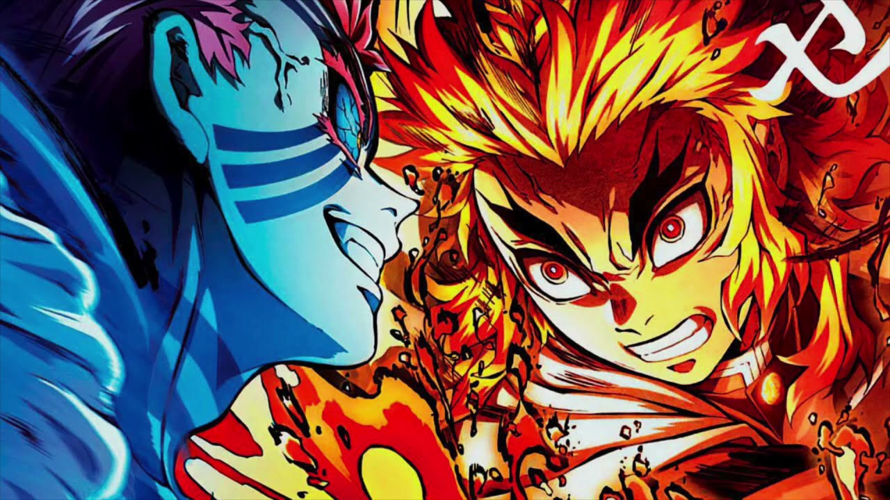
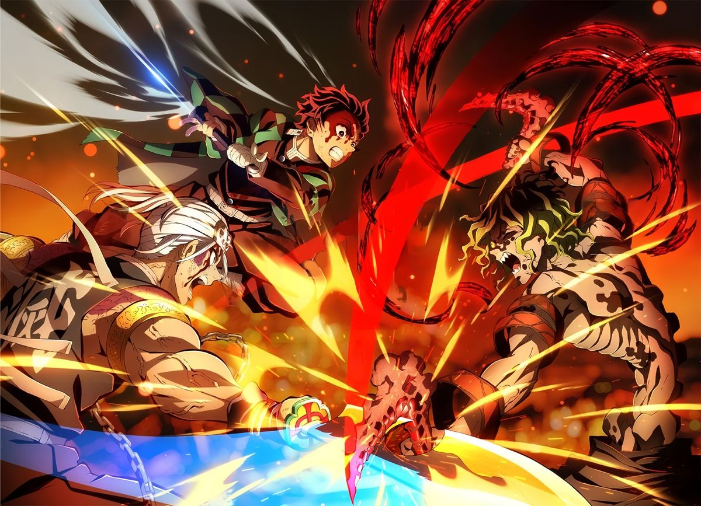
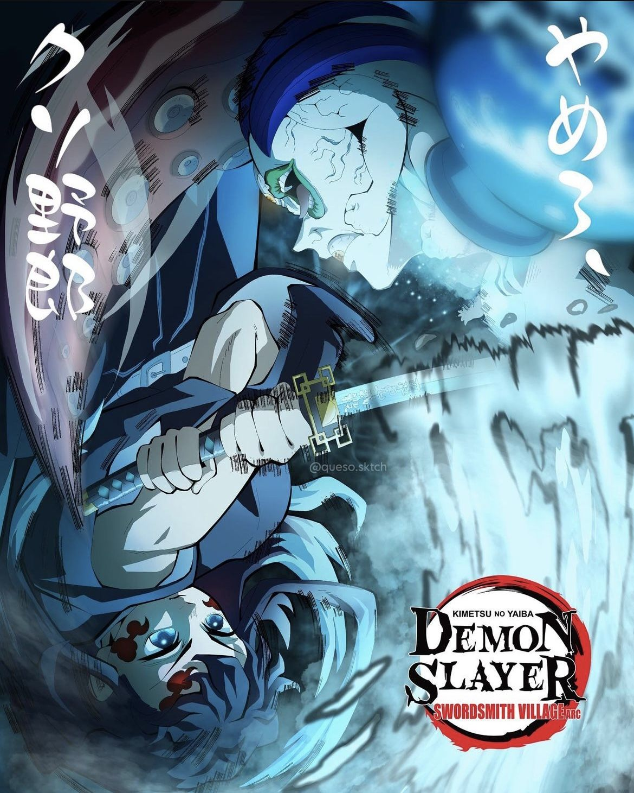
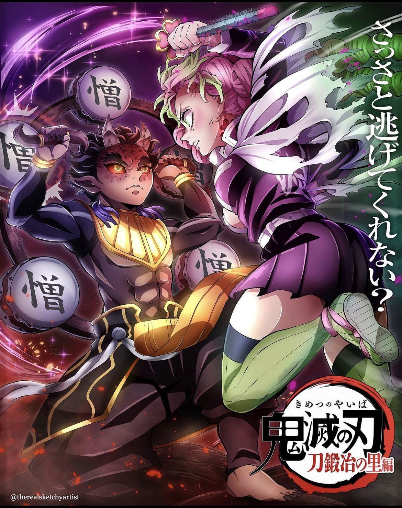
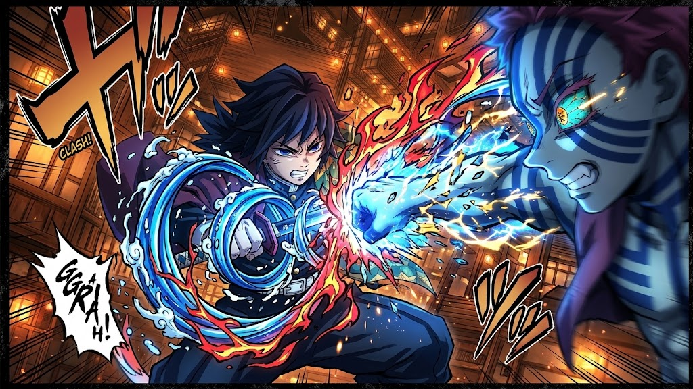
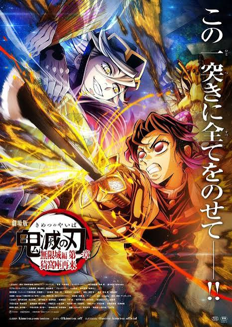
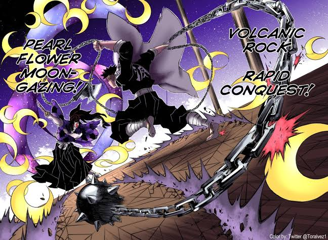
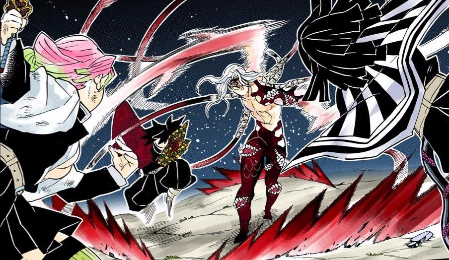

CHAPTER 001 // MUGEN TRAIN ARC
KYOJURO RENGOKU VS. AKAZA

⚡ *CLASH! DESTROYER STRIKE!* ⚡
Battle Summary: Upper Rank Three Akaza appears after Enmu's defeat. Flame Hashira Kyojuro Rengoku fights him single-handedly to protect 200 passengers and Tanjiro's squad until sunrise.
RESULT: Rengoku sacrifices his life; Akaza flees from the sun.
▶ Watch Rengoku vs Akaza Clash on YouTube
CHAPTER 002 // ENTERTAINMENT DISTRICT ARC
TENGEN UZUI & SLAYERS VS. DAKI & GYUTARO

💥 *EXPLOSION! SCORE COMPLETED!* 💥
Battle Summary: Tengen Uzui along with Tanjiro, Zenitsu, and Inosuke clash against Upper Rank Six. Tengen uses his Musical Score technique to decapitate Gyutaro and Daki at the same time.
RESULT: Upper Rank Six Defeated (First Upper Moon slain in 100 years).
▶ Watch Tengen vs Gyutaro Clash on YouTube
CHAPTER 003 // SWORDSMITH VILLAGE ARC
MUICHIRO TOKITO VS. GYOKKO (UPPER RANK FIVE)

⚡ *MIST BREATHING... SEVENTH FORM!* ⚡
Battle Summary: Mist Hashira Muichiro Tokito breaks free from Gyokko's Water Prison Pot after unlocking his Demon Slayer Mark. He uses his disorienting Seventh Form: Obscuring Clouds to completely outmaneuver Gyokko and behead him.
RESULT: Upper Rank Five (Gyokko) Defeated.
▶ Watch Tokito vs Gyokko Clash on YouTube
CHAPTER 004 // SWORDSMITH VILLAGE ARC
MITSURI KANROJI & SQUAD VS. HANTENGU (UPPER RANK FOUR)

💥 *LOVE BREATHING... WINDS OF LOVE!* 💥
Battle Summary: Love Hashira Mitsuri Kanroji awakens her Slayer Mark to hold off Hantengu's powerful combined wooden dragon clone, Zohakuten, giving Tanjiro the opening to track down and destroy Hantengu's true body.
RESULT: Upper Rank Four (Hantengu) Defeated / Nezuko Conquers Sunlight.
▶ Watch Mitsuri vs Hantengu Clash on YouTube
CHAPTER 007 // INFINITY CASTLE ARC
TANJIRO & GIYU VS. AKAZA (REMATCH)

🗡️ *TRANSPARENT WORLD SLASH!* 🗡️
Battle Summary: Inside the Infinity Castle, Tanjiro unlocks the Transparent World to decapitate Akaza. Remembering his human past, Akaza willingly stops regenerating.
RESULT: Akaza Defeated.
▶ Watch Tanjiro & Giyu vs Akaza Clash on YouTube
CHAPTER 005 // INFINITY CASTLE ARC
SHINOBU, KANAO & INOSUKE VS. DOMA (UPPER RANK TWO)

❄️ *CRYOKINESIS... LOTUS FROST!* ❄️
Battle Summary: Insect Hashira Shinobu Kocho engages Upper Rank Two Doma in a fatal duel. Knowing she cannot cut off his head, she allows herself to be absorbed, delivering a massive lethal dose of wisteria poison that melts Doma's body, allowing Kanao and Inosuke to finish him off.
RESULT: Upper Rank Two (Doma) Defeated / Shinobu Sacrifices Her Life.
▶ Watch Slayers vs Doma Clash on YouTube
CHAPTER 006 // INFINITY CASTLE ARC
GYOMEI, SANEMI, MUICHIRO & GENYA VS. KOKUSHIBO (UPPER RANK ONE)

⚔️ *MOON BREATHING VS. STONE & WIND!* ⚔️
Battle Summary: The elite Slayers face Upper Rank One Kokushibo inside the Infinity Castle. Through ultimate teamwork, red blades, and great sacrifice, the Hashira manage to overcome his terrifying Moon Breathing and regeneration.
RESULT: Upper Rank One Defeated at the cost of Muichiro and Genya's lives.
▶ Watch Kokushibo Battle on YouTube
CHAPTER 008 // THE FINAL BATTLE
THE DEMON SLAYER CORPS VS. DEMON KING MUZAN

☠️ *SUN BREATHING THIRTEENTH FORM!* ☠️
Battle Summary: The surviving Hashira and Slayers pin down Demon King Muzan in the city streets. Weakened heavily by Tamayo's anti-demon aging drug, Muzan fights furiously with shockwaves and whips until the morning sun finally disintegrates him.
RESULT: Demon King Muzan Destroyed / Demons Eradicated Forever.
▶ Watch Demon King Muzan Final Clash on YouTube